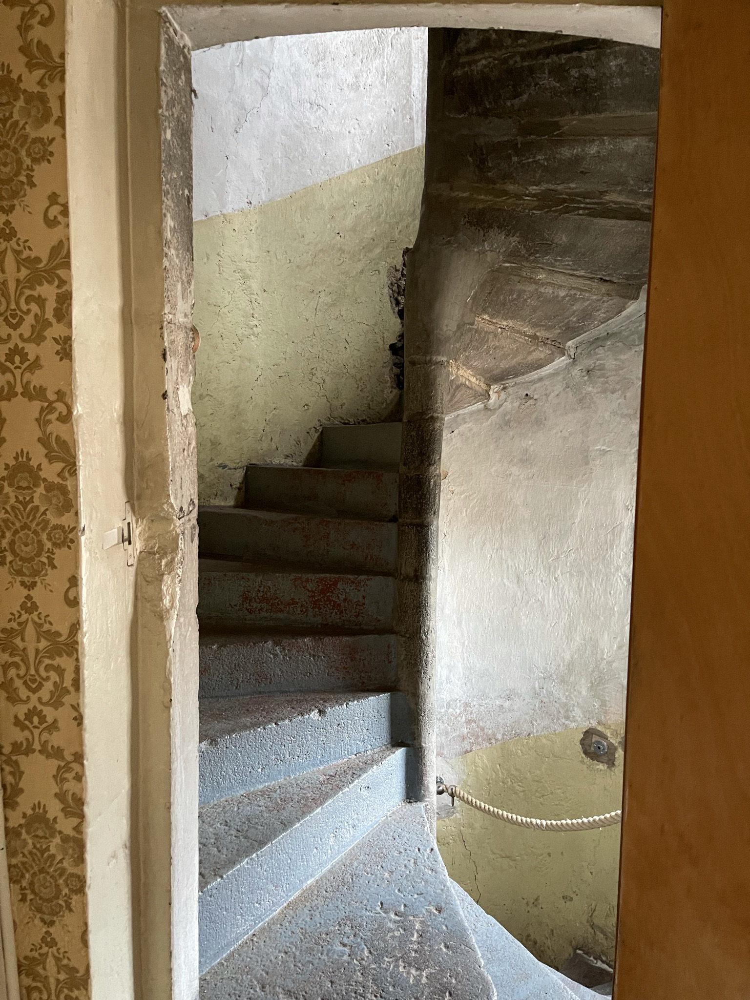
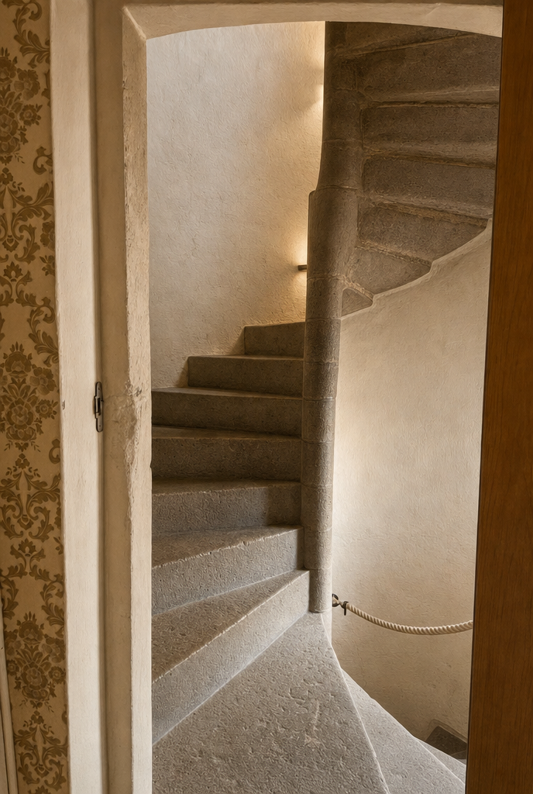
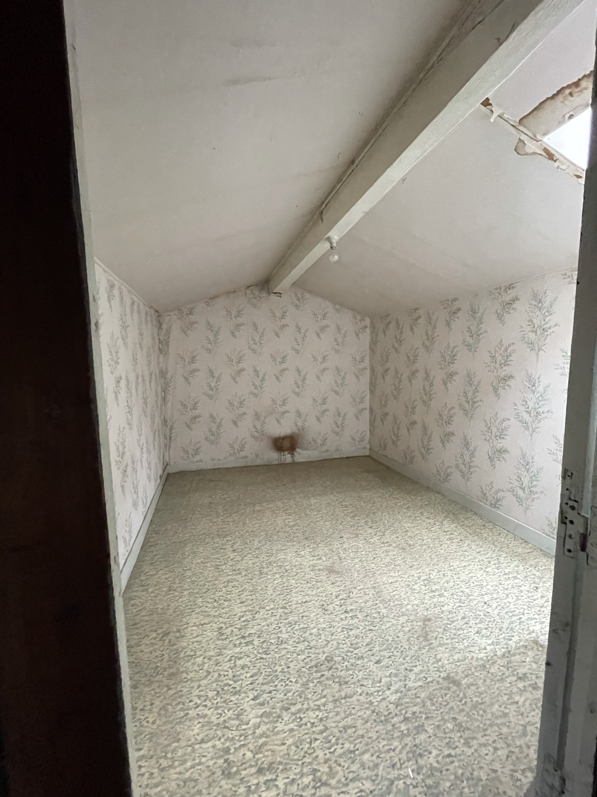
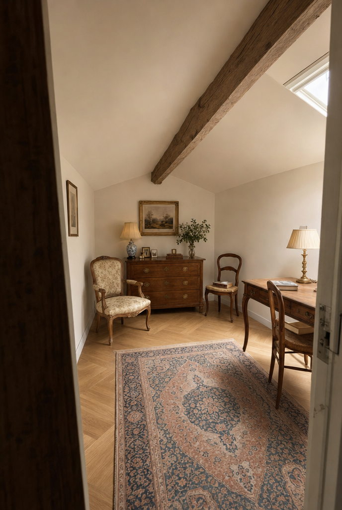
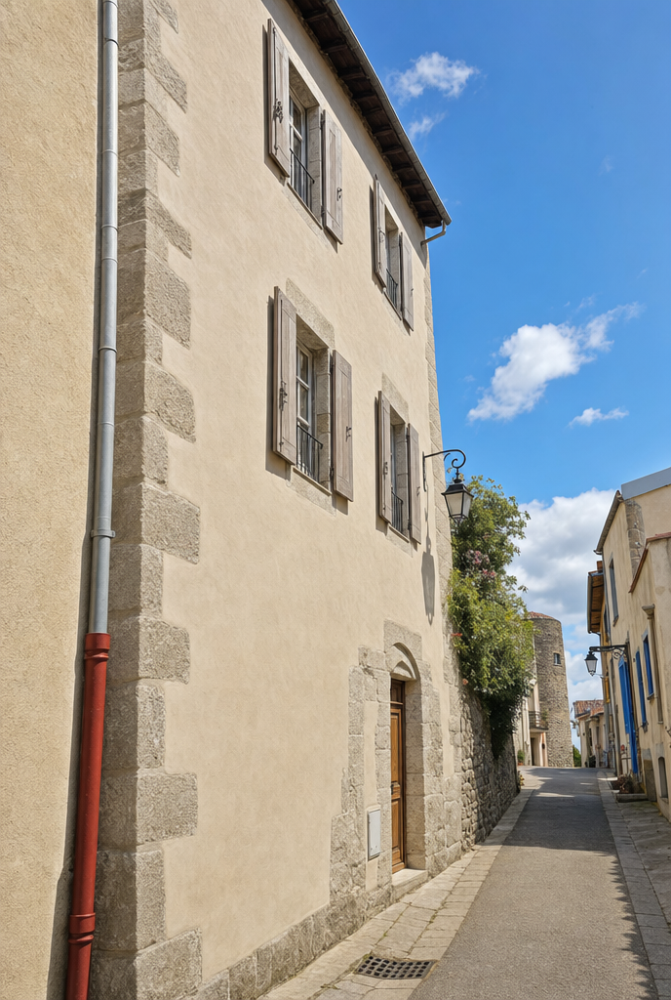
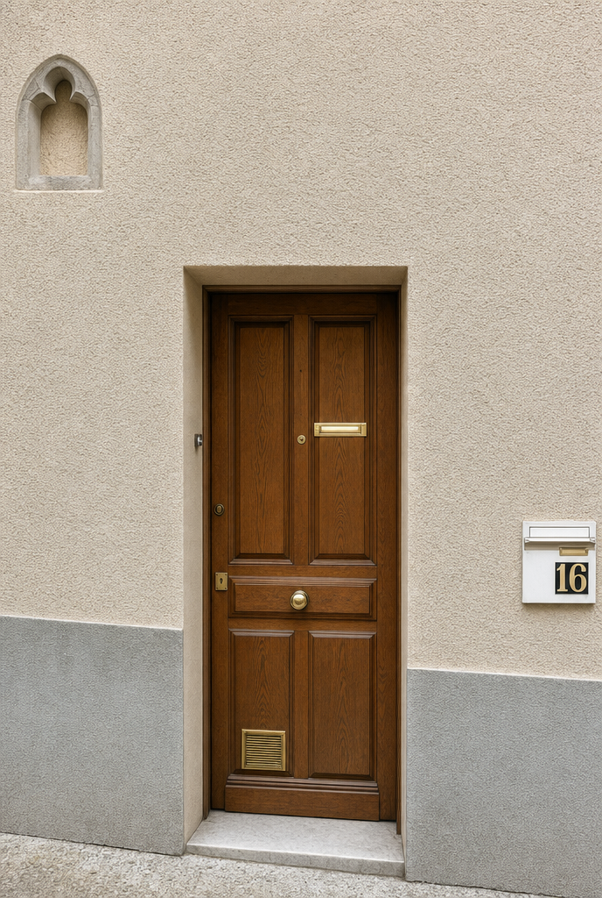
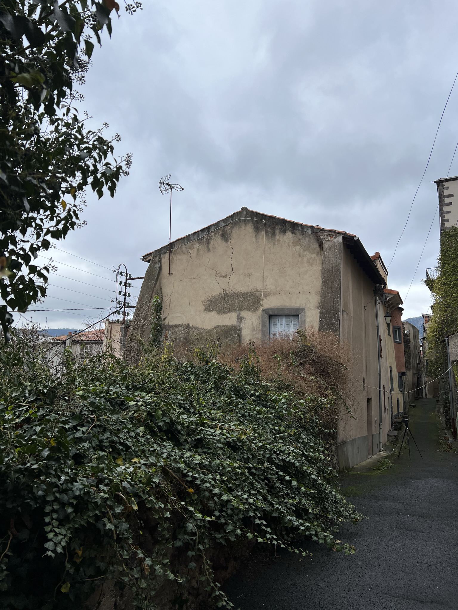
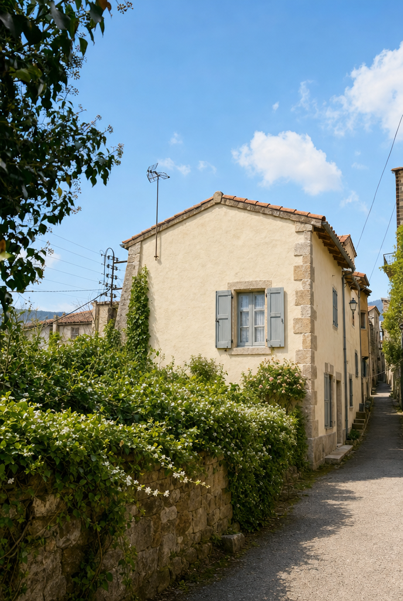

Le potentiel
Aujourd'hui une maison à révéler. Demain, ceci.
Le bien est à rénover intégralement — c'est tout l'intérêt pour un investisseur. Voici une projection du résultat, à partir de l'état actuel : pierre apparente, escalier en vis, jardin paysagé.
 AUJOURD'HUI
AUJOURD'HUI POTENTIEL
POTENTIELFaçade Sud & jardin

AUJOURD'HUI
POTENTIELEscalier en vis en pierre

AUJOURD'HUI
POTENTIELChambre sous combles
 AUJOURD'HUI
AUJOURD'HUI
POTENTIELFaçade sur ruelle
 AUJOURD'HUI
AUJOURD'HUI
POTENTIELEntrée & niche gothique

AUJOURD'HUI
POTENTIELVue d'angle sur la ruelle
Projections — vues d'artiste non contractuelles, générées à partir des photos du bien. À adapter selon le projet de rénovation.